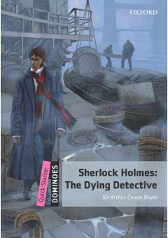

SHSherlok Xolmsning sirli kasalligi va uning kutilmagan fosh etilishi haqidagi detektiv hikoya.
Mashhur detektiv Sherlok Xolmsning o'lim to'shagida yotganligi haqidagi qiziqarli hikoya. Ushbu moslashtirilgan nashr ingliz tilini o'rganuvchilar uchun maxsus tayyorlangan bo'lib, voqealar rivoji kutilmagan yakun bilan yakunlanadi.